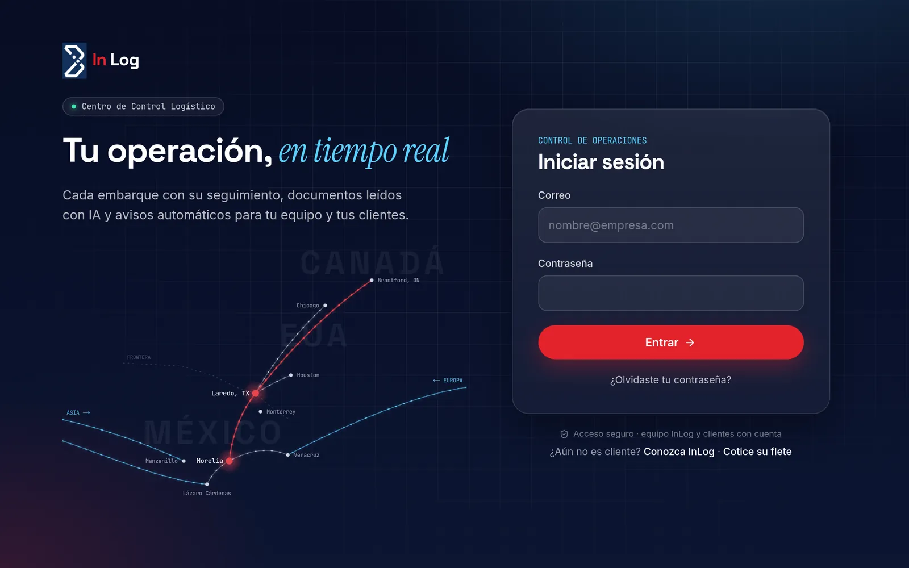

Ver sitio en vivoops.in-log.net/sitio ↗InLog · Control de Embarques, Rutas y Cobranza
Problema: Desorden en Excel, clientes preguntando dónde va su pedido y fugas en gastos de ruta.
Panel operativo para empresas de transporte y distribución: lee órdenes en PDF, envía link de rastreo en vivo y calcula la utilidad real de cada viaje.
- Link de rastreo en vivo para que tu cliente vea dónde va su entrega
- Lee documentos PDF automáticamente sin capturarlos a mano
- Cartas de instrucciones con firma digital desde el celular
- Control de facturas, cuentas por cobrar y alertas de ganancia
Ideal para: Empresas de transporte de carga, agencias aduanales, distribuidoras, comercializadoras y negocios que coordinan entregas o rutas.